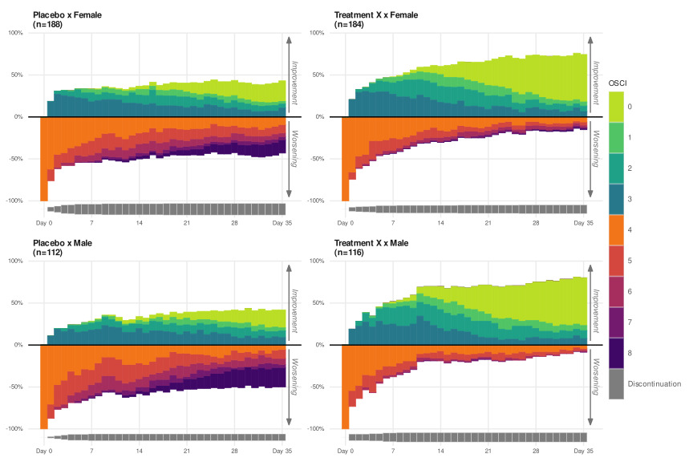

2022-05-27
It is not like visualisation is my favourite topic, but that is part of the job. The figure below is a submission to a monthly PSI Visualisation challenge. The final version can be found in the Wonderful Wednesdays seminar page of April 2022. The data proposed for the challenge:
“reflects a phase III study - active vs placebo and the endpoint was Ordinal Scale for Improvement (OSCI). All patients started at OSCI=4 and daily measures over 35 days were performed. The challenge was to describe the treatment effect specifically taking into account the number and timing of patients who died, left the hospital or fully recovered“ (shamlessly copy-pasted from the original page)
My proposition uses bars which extend below and above the 0 axis line which differentiates improvement from the absence of improvement. To provide more detailed information, shades accounts for the intensity of the response. Since approximately 4.5% of the world population is colour-blind, accessibility is also accounted for by using two colour-blind-friendly palette extending each side of the 0 line.

My submission can be found among other concurrent ideas in the Wonderful Wednesdays blog.
comments powered by Disqus